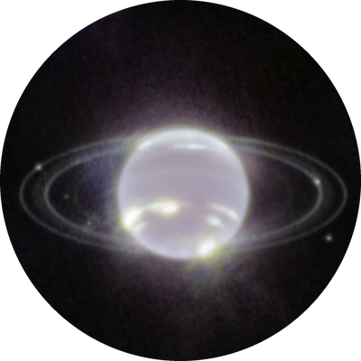
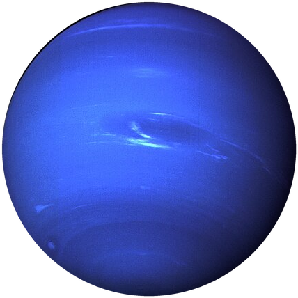
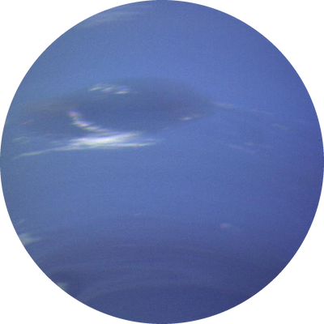

Neptune
Neptune is the eighth and farthest planet from the Sun. It is a deep blue ice giant with the fastest winds in the solar system.



0 km/h
Facts about Neptune
- Diameter: about 49,244 km
- Distance from the Sun: about 4.5 billion km
- A day lasts about 16 hours and a year lasts about 165 Earth years
- Winds can reach more than 2,000 km/h
- Its largest moon, Triton, orbits backward compared to Neptune's spin
- Astronomers predicted where it was with math before anyone saw it in 1846